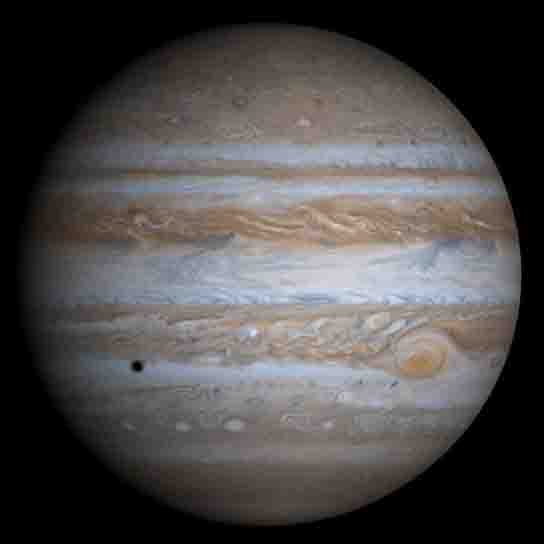

Jupiter
Jupiter is the fifth planet from the Sun and the largest planet in the Solar System.

Jupiter
Jupiter is the fifth planet from the Sun and the largest planet in the Solar System. It is a gas giant with mass one-thousandth of that of the Sun but is two and a half times the mass of all the other planets in the Solar System combined.
Orbital Charateristics
- Aphelion
- 816 520 800 km
- Perihelion
- 740 537 600 km
- Orbital period
- 11.8618 years
- Average orbital speed
- 13.07 km/s
Physical Characteristics
- Mean radius
- 69 911±6 km
- Mass
- 1027 kg
- Surface gravity
- 2.528 g
- Axial tilt
- 3.13°